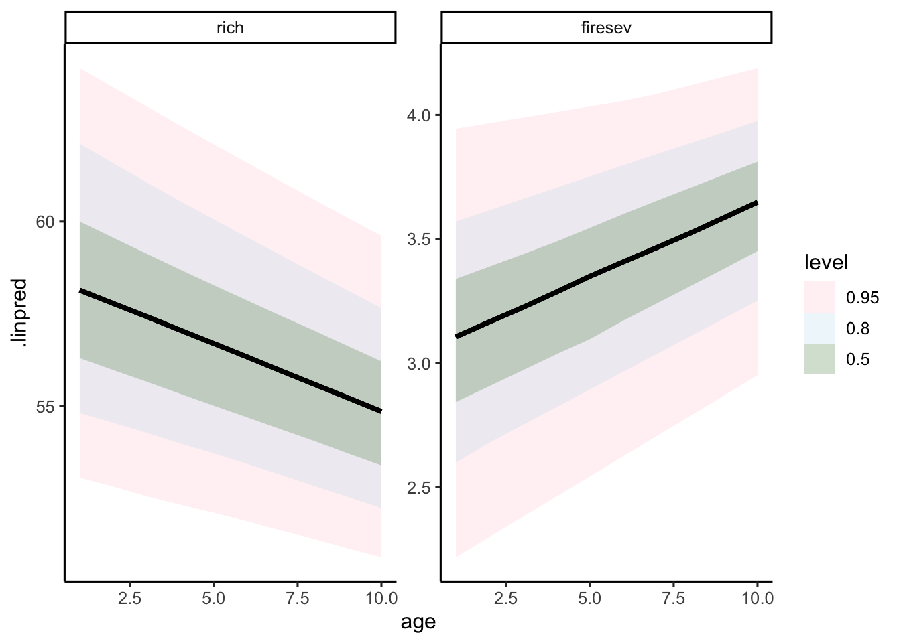
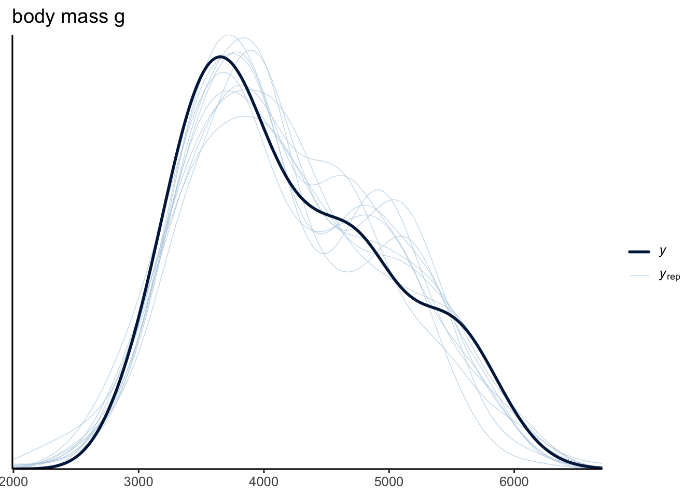
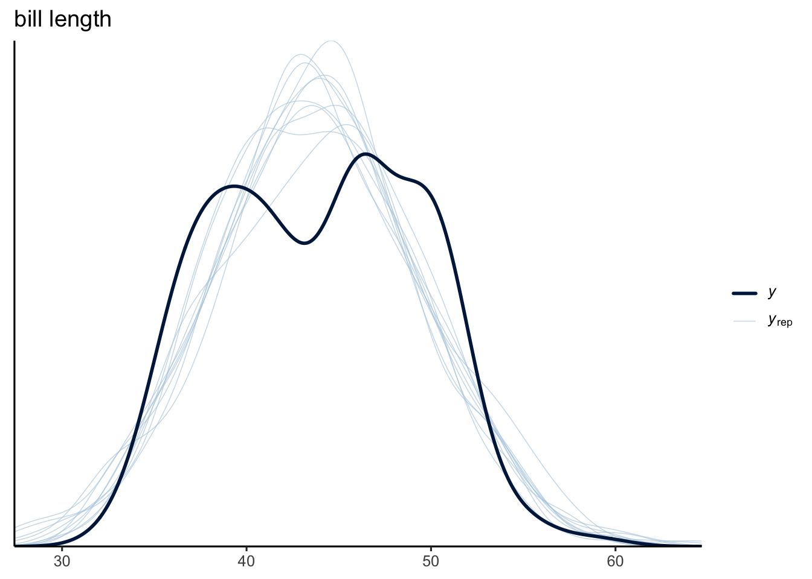
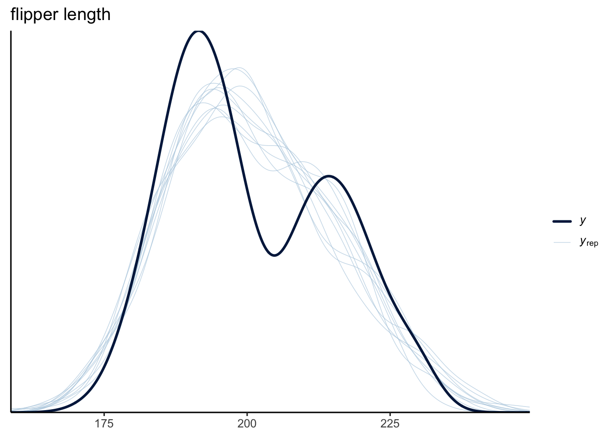
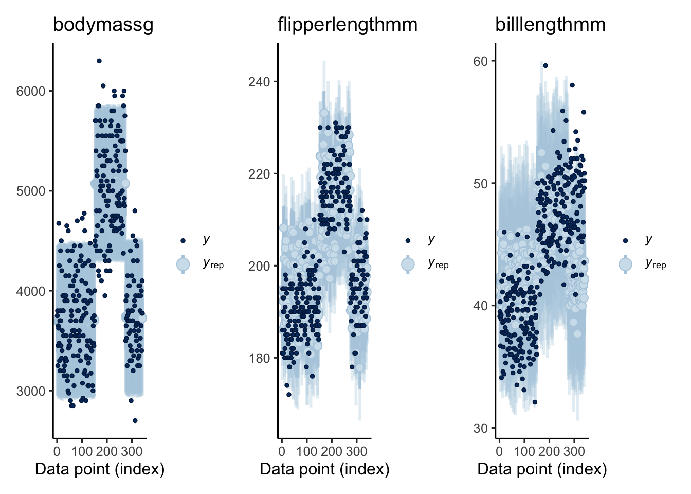
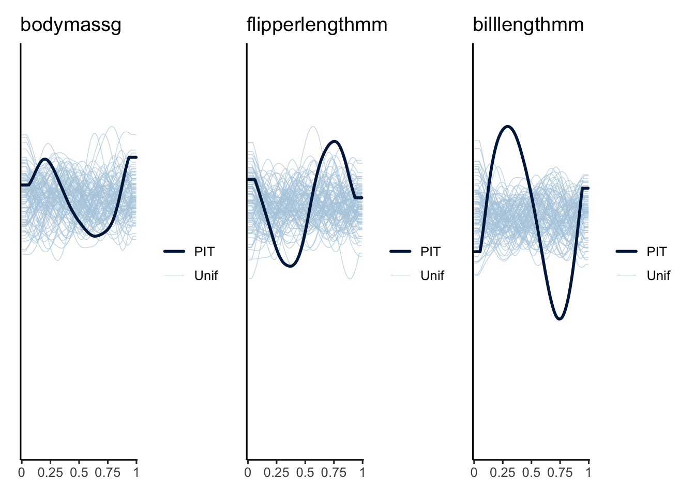
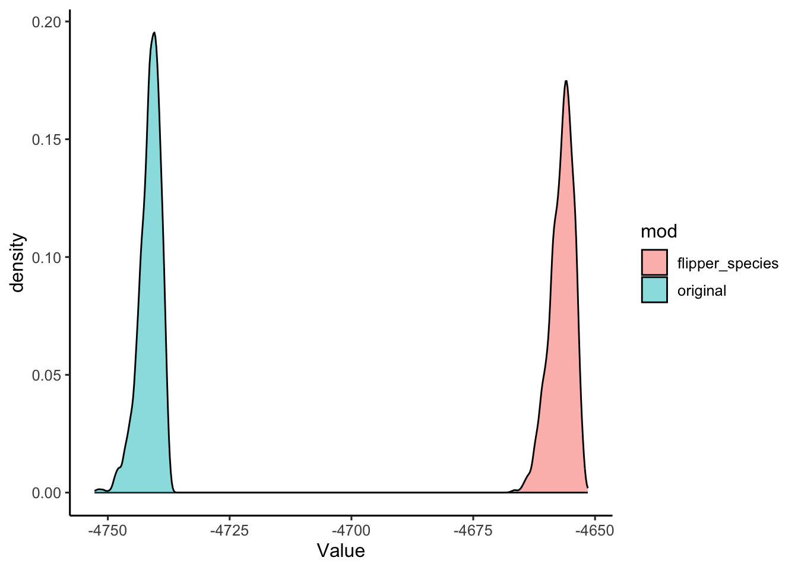
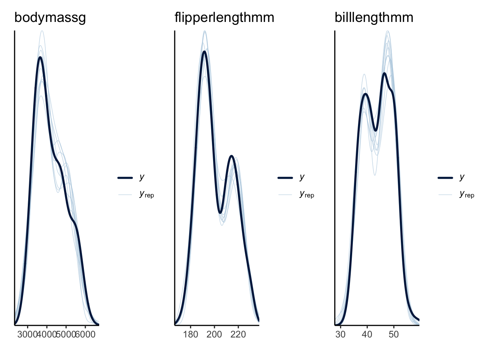
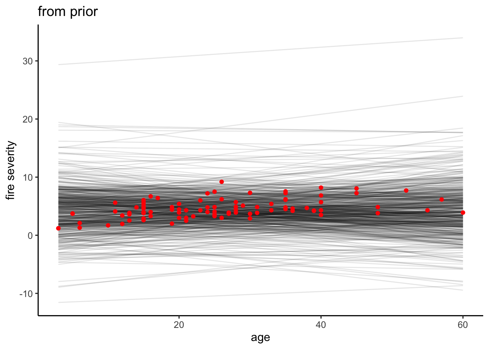
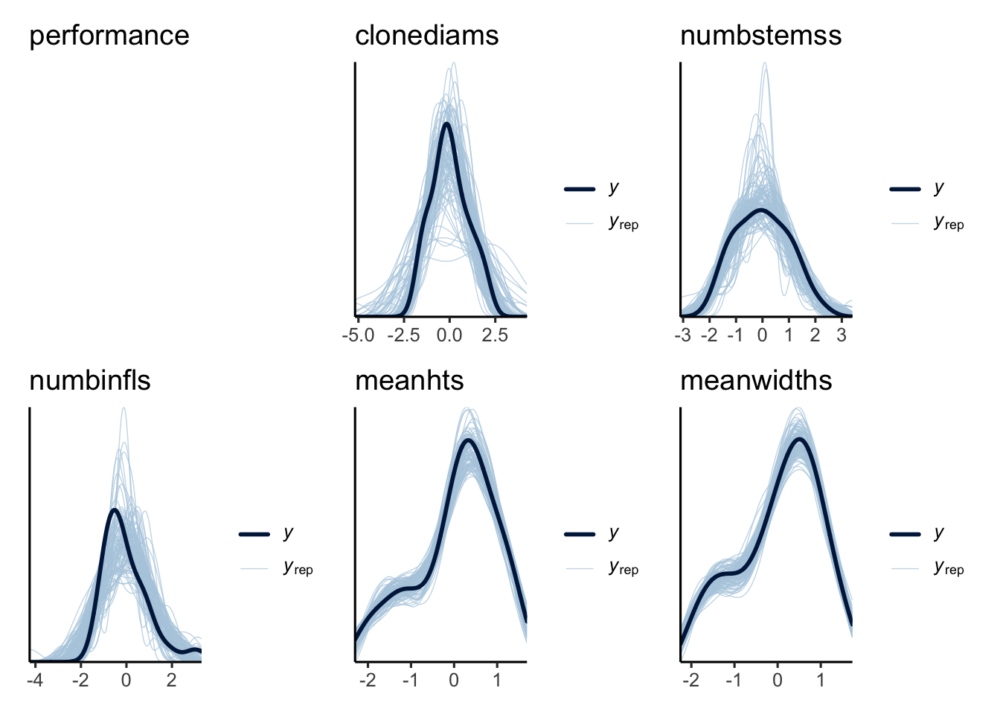

## If you don't have it, pacman is great
## as you never need to have a package load
## fail because it's not installed ever again
#install.packages("pacman")
pacman::p_load(
# our heroes of fitting
lavaan, brms, piecewiseSEM, rstan,
# a little help
tidybayes, dplyr, tidyr, purrr,
emmeans, readr,
# pretty coefficients
broom, broom.mixed,
# graph things
ggdag, dagitty,
# for plotting
ggplot2, patchwork)
# aesthetics
theme_set(theme_classic(base_size = 12))
# options to make brms faster on a multicore
# machine - change as needed
# options(brms.backend = "cmdstanr",
# mc.cores = parallel::detectCores(),
# threads = 2)Full Luxury Bayesian Structural Equation Modeling with brms
Libraries You’ll Need
Below is a bit of a mental exegesis on Bayesian SEM with brms. If you wish to follow along with R code, load up the following libraries, and then let’s let her rip. If you have comments or corrections, post them as an issue on the repo for this tutorial.
The Quest
I’ve been teaching Structural Equation Modeling for some years. I’ve been privileged enough to be supported by amazing people like Jim Grace and Jon Lefcheck. I’ve had conversations with Ecologists all over the world about what they’re looking to do with SEM and what roadblocks they face.
In lectures I’ve seen from Jim Grace, whose work I’ve deeply admired since reading his book, he introduces a few generations of SEM
Correlation-based SEM a.k.a. Path Analysis from Sewall Wright
Covariance-based SEM from Karl Joreskog
piecewiseSEM as developed by Bill Shipley and popularized by Jon Lefcheck in his piecewiseSEM package
Bayesian SEM
This later he presented as a next or final generation of SEM, and in a mini-course lecture, proceeded to show the class how to implement it in JAGS (this was a while back).
Why is Bayesian SEM a culmination of the development of the technique? Well, better to ask why Bayes. For which I can provide another enumerated list.
Bayesian techniques allow the incorporation of reasonable prior information into models (priors!)
Bayesian techniques allow for the creation of models that, when fed distributions of parameters can turn out simulations of data and when fed data can turn out distributions of parameters, allowing for a more dynamic modeling process and evaluation of robustness - even before data collection (thanks, Richard McElreath!)
Bayesian techniques, particularly as implemented by modern probabilistic programming languages, allow for arbitrarily complex model structures - perfect for SEM.
This later was part of the motivation behind piecewiseSEM approaches - while covariance-based SEM can be tortured into supporting things like glms, categorical variables, mixed models, and more, piecewiseSEM has a more natural ability to accomodate those modeling elements. On the other hand, it’s been a bear to bring elements like latent variables, multi-level SEMS, and more to the party.
As a fan of Bayesian methods, I’ve been noodling around with how they can work with SEM. They can be implemented in stan, JAGS, or, more intelligibly, in rethinking. There, they can accomodate classical covariance-based techniques (see blavaan) or be built for more piecewise approaches. With these approaches, they can even fold in latent variables as an unmeasured quantity with indicators being driven by this underlying latent variable.
As an educator and someone who works with students at a lot of levels, I wanted a Bayesian SEM approach that was more user-accessbile, and had robust tooling. Something that I wouldn’t have to teach a whole new language to use and that would allow someone to step from the world of using linear models in R straight into the seat of SEMs.
The tooling I wanted to use was brms, a brilliant user-accessible Bayesian analysis package by Paul Buerkner. IMHO has done for Bayesian methods what lavaan has done for SEM, frankly.
But - multivariate modeling was not super high on the list when the package started, and the bits and pieces have taken a while to come together. There are a few nice long threads in the github issues about it, but, I’ll admit, I’d kind of given up.
Until I had the confluence of two things happen the other day - a paper to review discussing Bayesian SEM among other options with brms, but that made a few statements about it that seemed out of date, and a report I had to write, and hence I was procractinating a bit.
So I took a dip in, and, well, things have really changed.
Let’s take a look at where things are now, as, I think it’s exciting.
A Bayesian Model of Direct and Indirect Effects
Let’s start with a classic teaching data set - the keeley data from the piecewiseSEM package. It has a number of variables describing plant communities that ultimately predict species richness. Let’s look at a classic example - how stand age affected fire severity and then how this pre-burn stand age and fire severity affect species richness. Let’s plot it using ggdag. For more on plotting graphs nicely, I wrote a little tutorial here.
dagify(
firesev ~ age,
rich ~ firesev + age,
coords = list(
x = c(age = 1, rich = 2, firesev = 1.5),
y = c(age = 1, rich = 1, firesev = -1))
) |>
ggplot(aes(x = x, y = y, xend = xend, yend = yend)) +
geom_dag_point(shape = 22,
size = 18,
fill = "black") +
geom_dag_text() +
geom_dag_edges() +
theme_dag()This is a nice little example, as it lets you dig into direct and indirect effects of age. It’s simple to fit in lavaan or piecewiseSEM.
data(keeley)
rich_lavaan <-
sem("
rich ~ age + firesev
firesev ~ age",
data = keeley)
rich_piecewise <-
psem(lm(rich ~ age + firesev, data = keeley),
lm(firesev ~ age, data = keeley),
data = keeley)
# check out those coefs
summary(rich_lavaan)$pe lhs op rhs exo est se z pvalue
1 rich ~ age 0 -0.20455529 0.13046209 -1.567929 1.168977e-01
2 rich ~ firesev 0 -2.65645229 0.99217811 -2.677395 7.419720e-03
3 firesev ~ age 0 0.05967903 0.01235052 4.832105 1.350972e-06
4 rich ~~ rich 0 189.93089581 28.31322627 6.708204 1.970335e-11
5 firesev ~~ firesev 0 2.14374847 0.31957115 6.708204 1.970335e-11
6 age ~~ age 1 156.15666667 0.00000000 NA NAcoefs(rich_piecewise) Response Predictor Estimate Std.Error DF Crit.Value P.Value Std.Estimate
1 rich age -0.2046 0.1327 87 -1.5416 0.1268 -0.1702
2 rich firesev -2.6565 1.0091 87 -2.6324 0.0100 -0.2906 *
3 firesev age 0.0597 0.0125 88 4.7781 0.0000 0.4539 ***We can do a lot with these - plot, look at standardize coefficients. With piecewise, we can use the sinterval library to even simulate from it (a project I’m still noodling on). This later is important when it comes to thinking about calculating direct and indirect effects with nonlinear models.
How do we do this in a Bayesian model? brms allows us to “add” together different formulas, and then has some options to check whether residual correlations between endogenous variables should be modeled - which we don’t want to do.
rich_bf <-
bf(rich ~ age + firesev) +
bf(firesev ~ age) +
set_rescor(FALSE)OK, so, that’s the model of our data generating process from the DAG above. Quite similar to what we had with lavaan and piecewiseSEM, no? Now, what about fitting? For the moment, we’re going to stick with the default priors from brms - which is a shame, as we can do better - but, more on that later.
What are those priors?
get_prior(rich_bf,
data = keeley) prior class coef group resp dpar nlpar lb ub
(flat) b
(flat) Intercept
(flat) b firesev
(flat) b age firesev
student_t(3, 4.3, 2.5) Intercept firesev
student_t(3, 0, 2.5) sigma firesev 0
(flat) b rich
(flat) b age rich
(flat) b firesev rich
student_t(3, 50, 19.3) Intercept rich
student_t(3, 0, 19.3) sigma rich 0
source
default
default
default
(vectorized)
default
default
default
(vectorized)
(vectorized)
default
defaultSo, we have flat priors for all slopes and a Student’s T for the intercept and sigma. Here, the parameters are the degrees of freedom, mean, and standard deviation of the population. Note the lower bound is set at 0. They also vary by response variable, with means and sigmas derived from the data. So you can understand what those are, let’s take a look for fire severity!
# intercept plot
tibble(x = seq(0,15, .1),
y = dstudent_t(x, df = 3,
mu = 4.3, sigma = 2.5)) |>
ggplot(aes(x=x, y=y)) +
geom_line() +
geom_vline(xintercept = mean(keeley$firesev),
lty = 2) +
labs(title = "firesev intercept prior",
subtitle = "dashed line = mean of firesev")
# sd
tibble(x = seq(0,6, .1),
y = dstudent_t(x, df = 3,
mu = 0, sigma = 2.5)) |>
ggplot(aes(x=x, y=y)) +
geom_line() +
geom_vline(xintercept = sd(keeley$firesev),
lty = 2) +
labs(title = "firesev sd prior",
subtitle = "dashed line = sd of firesev")OK, that’s enough priors for the moment. We’ll get back to them soon.
Now, let’s fit this model and first just look at the coefficients relative to our prior (hehe) efforts.
# note, backend and threads are for speed
# and file is so that the first time I fit, the model
# is saved out so I don't have to refit if I rerun
# when compiling this document
rich_brms <- brm(rich_bf, data = keeley,
file = "fit_models/rich_brms.rds")Let’s start with a plain old coefficient comparison.
tidy(rich_lavaan)[,c("term", "estimate")]# A tibble: 6 × 2
term estimate
<chr> <dbl>
1 rich ~ age -0.205
2 rich ~ firesev -2.66
3 firesev ~ age 0.0597
4 rich ~~ rich 190.
5 firesev ~~ firesev 2.14
6 age ~~ age 156. coefs(rich_piecewise)[,c("Response", "Predictor", "Estimate")] Response Predictor Estimate
1 rich age -0.2046
2 rich firesev -2.6565
3 firesev age 0.0597tidy(rich_brms)[,c("response", "term", "estimate")]# A tibble: 7 × 3
response term estimate
<chr> <chr> <dbl>
1 rich (Intercept) 66.5
2 firesev (Intercept) 3.04
3 rich age -0.204
4 rich firesev -2.65
5 firesev age 0.0598
6 rich sd__Observation 14.2
7 firesev sd__Observation 1.50 # lavaan gives variance, brms sd
# so, for richness for comparison
14.2^2[1] 201.64Yep, pretty close! Everything looks good!
Simulating a System
OK! You have a fit model! Now, we want to use it as a query engine. For example, what if stand age had been 25? What would we predict species richness should be here?
We can do this by hand with lavaan, pulling including meanstructures, pulling out coefficient covariance matrices. I’ve written code in the past to do this, but, seems like some of the underlying functions have changed. Really need to re-write that.
We can do it with piecewiseSEM using a package I wrote called sinterval.
But - what about Bayes? brms has a predict method. And there is also tidybayes and its functions (which I love). At this point, we can’t just put in an age and let the machinery chug - we have to do some work, but, it will get there one day.
So we can start with part 1 - going from age to fire severity. We have to give the data an NA for fire severity as we need to include a placeholder for richness calculation - even though it will be NA. Here it is with both brms and tidybayes
new_age_dat <- data.frame(age = 25, firesev = NA)
predict(rich_brms, newdata = new_age_dat) |>
as_tibble()Warning in rnorm(.x1, mean = .x2, sd = .x3): NAs produced# A tibble: 1 × 8
Estimate.rich Est.Error.rich Q2.5.rich Q97.5.rich Estimate.firesev
<dbl> <dbl> <dbl> <dbl> <dbl>
1 NaN NA NA NA 4.53
# ℹ 3 more variables: Est.Error.firesev <dbl>, Q2.5.firesev <dbl>,
# Q97.5.firesev <dbl>linpred_draws(rich_brms, new_age_dat) |>
group_by(.category) |>
summarize(.linpred = mean(.linpred))# A tibble: 2 × 2
.category .linpred
<fct> <dbl>
1 rich NA
2 firesev 4.53These are nice, and it’s easy to manipulate the output to, say, get the richness value based on average predictions. What if we want more though? Let’s say we want fit, but, we want to fully propogate uncertainty in parameters through - and not just for one value of age, but a lot of them! Now we want to look at the posterior. Let’s look at this with linpred_draws
new_age_dat_more <- data.frame(age = 1:10, firesev = NA)
linpred_draws(rich_brms, new_age_dat_more) |>
filter(.category=="firesev") # A tibble: 40,000 × 8
# Groups: age, firesev, .row, .category [10]
age firesev .row .chain .iteration .draw .category .linpred
<int> <lgl> <int> <int> <int> <int> <fct> <dbl>
1 1 NA 1 NA NA 1 firesev 3.28
2 1 NA 1 NA NA 2 firesev 2.97
3 1 NA 1 NA NA 3 firesev 2.73
4 1 NA 1 NA NA 4 firesev 3.33
5 1 NA 1 NA NA 5 firesev 3.14
6 1 NA 1 NA NA 6 firesev 3.24
7 1 NA 1 NA NA 7 firesev 2.95
8 1 NA 1 NA NA 8 firesev 3.25
9 1 NA 1 NA NA 9 firesev 3.35
10 1 NA 1 NA NA 10 firesev 2.87
# ℹ 39,990 more rowsWhoah. 40K posterior draws. That’s because we have 10 values and 4K draws from the posterior. If we propagate in even a moderately sized model, that’s going to get out of control fast. So, you’ll need to trim down the number of samples in each round of drawing. Here, let’s go with 100.
rich_pred_fit <- linpred_draws(rich_brms,
newdata = new_age_dat_more,
ndraws = 100) |>
filter(.category=="firesev") |>
ungroup() |>
select(age, .linpred) |>
rename(firesev = .linpred) |>
linpred_draws(rich_brms,
newdata = _,
ndraws = 100)
rich_pred_fit# A tibble: 200,000 × 8
# Groups: age, firesev, .row, .category [2,000]
age firesev .row .chain .iteration .draw .category .linpred
<int> <dbl> <int> <int> <int> <int> <fct> <dbl>
1 1 3.64 1 NA NA 1 rich 57.0
2 1 3.64 1 NA NA 2 rich 54.1
3 1 3.64 1 NA NA 3 rich 51.9
4 1 3.64 1 NA NA 4 rich 56.7
5 1 3.64 1 NA NA 5 rich 61.0
6 1 3.64 1 NA NA 6 rich 56.3
7 1 3.64 1 NA NA 7 rich 60.5
8 1 3.64 1 NA NA 8 rich 61.2
9 1 3.64 1 NA NA 9 rich 56.1
10 1 3.64 1 NA NA 10 rich 54.6
# ℹ 199,990 more rowsWhat’s lovely about this output is that, because we had age as a predictor again, we actually get the linear predictor of fire severity - and lots of it - back for free. This means we can plot it all out using stat_lineribbon from tidybayes or ggdist and see all of the relationships with full error propogation.
ggplot(rich_pred_fit,
aes(x = age, y = .linpred)) +
stat_lineribbon(alpha = 0.2) +
stat_lineribbon(fill = NA, color = "black") +
scale_fill_manual(values = c("pink", "lightblue", "darkgreen")) +
facet_wrap(vars(.category), scale = "free_y")
Note, if we wanted, we could have also done this with predicted_draws in order to address, say, nonlinear relationships in our model and/or to get propagation of error from external sources. This intervals are going to be wider, as they’ll incorporate additional uncertainty. Try going back and using that function instead to see what difference it makes - it’s substantial, which isn’t surprising given the low R2 of the relationships. But also….because some other elements are lurking here worth examing, namely -
bayes_R2(rich_brms) Estimate Est.Error Q2.5 Q97.5
R2rich 0.1657633 0.06093223 0.05215775 0.2900339
R2firesev 0.2061607 0.06837295 0.07097597 0.3360584Calculating a Direct and Indirect Effect
We fit this model, presumably, in order to evaluate the direct and indirect effect of pre-burn stand age on species richness. In a frequentist world, we’d pop in and look at p values. But, we’re not in that world any more, and we want to think like a Bayesian if we’re evaluating a hypothesis.
Sure, we can look at slopes and multiply them as we’ve done with linear SEM. But, what if this had been a more complex SEM with nonlinear relationships? We need a more general solution, which has been outlined in several places. The Direct effect of age is the effect of a one unit change in age, but holding all mediators - in this case fire severity - constant. The indirect effect is the effect on richness by a change in the mediator - fire severity - of a magnitude were age to have changed by one unit, but holding the age effect constant.
A mouthful. We can represent this in equations, but, it’s a bit simpler to show in code.
So, for the DE, we can actually use linpred_draws as before. We can look at age = 0 and age = 1 (a one unit change), BUT, let’s peg firesev to 0. Note, this is all fine for linear equations. Were we talking about nonlinear relationships, we’d likely want some context here - using medians or other intelligently chosen values.
Once we get the predicted richness, we can subtract one from the other. Note, it’s going to be the slope - -0.205 - but, again, think about the process here and what could happen in a more complex scenario.
de <- linpred_draws(rich_brms,
newdata = data.frame(age = c(0,1), firesev = 0)) |>
ungroup() |>
filter(.category == "rich") |>
select(age, .draw, .linpred) |>
group_by(.draw) |>
arrange(age) |>
summarize(de = .linpred[2] - .linpred[1])
# here it is!
mean(de$de)[1] -0.2035853quantile(de$de, probs = c(0.05, 0.11, 0.5, 0.89, 0.95)) 5% 11% 50% 89% 95%
-0.42306080 -0.36770232 -0.20641050 -0.03878914 0.02153846 So, yes, complex for a linear model. But perfect if this had been, say, exponential. We could have even looked at how much richness changes in units of standard deviations or whatnot.
What’s great is that, from the above, we also got the change in fireseverity from the simulation - ~ -2.65. So, we can apply the same workflow, and them compare the two effects.
ide <- linpred_draws(rich_brms,
newdata = data.frame(age = c(0,0), firesev = c(0, -2.65))) |>
ungroup() |>
filter(.category == "rich") |>
select(age, .draw, .linpred) |>
group_by(.draw) |>
arrange(age) |>
summarize(ide = .linpred[2] - .linpred[1])
direct_indirect <- data.frame(direct = de$de, indirect = ide$ide) |>
pivot_longer(everything())
ggplot(direct_indirect,
aes(y = name, x = value)) +
stat_slabinterval() +
geom_vline(xintercept = 0, lty = 2, color = "red") +
labs(y="", x = "change in richness")Wow. Really shows the difference in magnitude and how much stronger that indirect effect is here. And while we could have done a bunch of multiplication here, we’re answering a direct question that is very specific, which I like. How strong is the direct versus indirect effect of changing age by one unit.
ROPEs
Eyeballing is great here, but, what if we want some numbers to sink our teeth into. We’re not talking p-values but something equivalent. In a frequentist world, a p value for NHST of a parameter evaluates a point hypothesis asking what is the probability of obtaining our coefficient or more extreme coefficient given the data and precision if the true value of the coefficient had been 0. That’s a lot. And not what we want to know.
We want to know, given our data, what’s the probability of our coefficient being practically equivalent to 0. We know there’s a full posterior there. We’re not interested in a point hypothesis. We instead want to meld biological significance and statistical evidence. So, what’s a range of potential values that a given coefficient could be estimate as that are, for all intents and purposes, 0. For linear models, Kruschke (2018) suggests 0 ± 0.1 SD of Y. I.e., a one unit change in X evinces a 10% change in SD of Y. However you define this region of practical equivalence to 0, we can test it. So, how much of the posterior of the direct and indirect effect are within that range? Let’s find out.
sdy <- sd(keeley$rich)
# how much of the direct effect is in the ROPE?
sum(de$de > -0.1 * sdy & de$de < 0.1 * sdy)/length(de$de)[1] 1# and the indirect effect
sum(ide$ide > -0.1 * sdy & ide$ide < 0.1 * sdy)/length(ide$ide)[1] 0.022So, 100% of the direct effect is in the ROPE. 2% of the indirect. This suggests that we have a fully mediated model here.
Note, 10% might be a lot. It’s worth asking, is that the proper interval? The range of fire severity is from 1.2 to 9.2. Is it reasonable that a 1 year stand age change evincing a 1% change in fire severity should be considered a null effect? That’s a question of biology! And might not be appropriate to just use 0.1 * sdy blindly.
Note: bayestestR has a rope() function, although it can be tricky to use with multivariate models when you want to set custom ranges. Needs some work for these models, but, you might find it useful.
Comparing Models to Test Mediation
OK, so, we have this suggestion that our direct effect is not needed. In classical SEM, we’d compare the two models and see if the simpler model produces a covariance matrix not different from the more complex saturated one. What to do here? Well, we have options. First, let’s fit a model with no direct effect.
rich_bf_indirect <-
bf(rich ~ firesev) +
bf(firesev ~ age) +
set_rescor(FALSE)
rich_brms_indirect <- brm(rich_bf_indirect,
data = keeley,
file = "fit_models/rich_brms_indirect.rds")We can compare these in a number of ways. For predictive ability, we could use Leave One Out cross-validation, for example.
loo(rich_brms, rich_brms_indirect)Output of model 'rich_brms':
Computed from 4000 by 90 log-likelihood matrix.
Estimate SE
elpd_loo -532.9 8.5
p_loo 6.6 1.0
looic 1065.9 16.9
------
MCSE of elpd_loo is 0.0.
MCSE and ESS estimates assume MCMC draws (r_eff in [0.9, 1.5]).
All Pareto k estimates are good (k < 0.7).
See help('pareto-k-diagnostic') for details.
Output of model 'rich_brms_indirect':
Computed from 4000 by 90 log-likelihood matrix.
Estimate SE
elpd_loo -533.2 8.6
p_loo 5.8 0.9
looic 1066.3 17.1
------
MCSE of elpd_loo is 0.0.
MCSE and ESS estimates assume MCMC draws (r_eff in [0.9, 1.4]).
All Pareto k estimates are good (k < 0.7).
See help('pareto-k-diagnostic') for details.
Model comparisons:
elpd_diff se_diff
rich_brms 0.0 0.0
rich_brms_indirect -0.2 1.2 They are not really different - within an SE of one another. We could use Bayes Factors, which give a weight of evidence of one model over another. They are approximated in the likelihood world with the BIC. You can use bayes_factor() or bayestestR::bf(). Here, we’re using flat priors, which is not great for BFs. Don’t do this. As this tutorial uses cmdstanr, to avoid recompiling, and all that, I’ll just give you the result of bayes_factor()
Estimated Bayes factor in favor of rich_brms over rich_brms_indirect: 1.09650So, that means there’s an even chance of one model versus the other - similar ot the loo output.
Given all of the evidence, we can likely reject the model with direct and indirect effects in favor of the simpler model.
Assessing Model Fit
One of the big things about SEM is the ability to look at global fit. Particularly covariance-based approaches are premised on looking at fit to observed covariance matrices. piecewiseSEM models are evaluated by looking at tests of directed separation.
Too look at this, let’s start with a new model with a hair more complexity so we can show tests of model fit. We’ll use palmerpenguins and have a model where species predicts mass which predicts morphological characteristics.
library(palmerpenguins)
penguin_bf <-
bf(body_mass_g ~ species) +
bf(flipper_length_mm ~ body_mass_g) +
bf(bill_length_mm ~ body_mass_g) +
set_rescor(FALSE)
penguin_sparse_brm <- brm(penguin_bf,
data = penguins,
file = "fit_models/penguin_sparse_brm.rds")The model runs, but, is it any good? Or are there things missing? How can we evaluate global fit? We have a few options
Fit of response variables
How did we do here? Are our models any good at representing the data generating processes that lead to the endogenous variables? In Bayesian models, we often look at posterior checks to see whether the distribution of the model matches the data. We can do this with pp_check(). Note, in specifying which response variable, brms likes to ditch underscores. You can see this with variables(penguin_sparse_brm) to see coefficient names and variable names.
pp_check(penguin_sparse_brm,
resp = "bodymassg") +
labs(title = "body mass g")Using 10 posterior draws for ppc type 'dens_overlay' by default.
pp_check(penguin_sparse_brm,
resp = "billlengthmm")+
labs(title = "bill length")Using 10 posterior draws for ppc type 'dens_overlay' by default.
pp_check(penguin_sparse_brm,
resp = "flipperlengthmm")+
labs(title = "flipper length")Using 10 posterior draws for ppc type 'dens_overlay' by default.
Body mass looks good, but, both flipper length and bill length have something…. off. BTW, to see them all in one place, we can use some magic from patchwork::wrap_plots() to bring it all together for a model of arbitrary size.
penguin_bf$responses |>
purrr::map(~pp_check(penguin_sparse_brm,
resp = .x) +
labs(title = .x)) |>
wrap_plots()It’s the multimodality that is problematic here in the observed v. predicted data. Note that the predictions for body mass HAVE that multimodality. Species is also a predictor. Which suggests…. yeah, you guessed it.
But, this approach is a great way of assessing model fit in general. It won’t tell you what is wrong, but it will tell you what is not working as a visual assessment of fit. You can also look at other plots other than the posterior density overlay - I’m a fan of loo plots such as the following (which show the same problems)
penguin_bf$responses |>
purrr::map(~pp_check(penguin_sparse_brm,
resp = .x, type = "loo_intervals") +
labs(title = .x)) |>
wrap_plots()
penguin_bf$responses |>
purrr::map(~pp_check(penguin_sparse_brm,
resp = .x, type = "loo_pit_overlay") +
labs(title = .x)) |>
wrap_plots()
Conditional Independence Tests
What about tests of conditional independence? This has been a hallmark of piecewise approaches, and is a great way to evaluate hard causal claims about the structure of a model - namely, that two variables do not connect?
First, what are the claims? Let’s use some tools from ‘dagitty’ and ‘ggdag’ here.
dagify(
body_mass_g ~ species ,
flipper_length_mm ~ body_mass_g,
bill_length_mm ~ body_mass_g
) |>
impliedConditionalIndependencies()bl__ _||_ fl__ | bd__
bl__ _||_ spcs | bd__
fl__ _||_ spcs | bd__Shortened names together, we can see there are three claims - each of which we should be able to evaluate here. So, how do we do this evaluation?
Brutal honesty time - I’m still thinking a lot about the right way to do this, and would love any thoughts and feedback on some of the next few bits. Some parts, I will even phrase as a question with some uncertainty. Greater Bayesian minds than I (I still am a dabbler after all) might have some great thoughts here
In evaluating conditional independence, we have a straightforward relationship. Let’s say we wanted to know the conditional indepdence of bl || sp | bm. Well, we know that this implies
p(bl | sp, bm) = p(bl | bm)
What’s the evidence for this claim? On it’s face it seems like, well, let’s fit a model with a missing link included, and then look at the posterior of that coefficient and see if it overlaps 0. That makes me uncomfortable for two reasons. First, that’s awfully frequentist, TBH. I know, we could use ROPEs as an alternative. But, that doesn’t resolve the second issue. Namely, what about non-continuous variables? How do we evaluate it for incorporating a categorical variable with three levels? Do we look at each level of the categorical variable independently? That’s not right.
So, what’s a more general solution? I have two thoughts here, both resting on distributional overlaps. I’d love to know if these all seem reasonable or incorrect or if I’m missing something obvious
First, we have the relationship fl || sp | bm
p(fl | sp, bm) = p(fl | bm)
We could look at the distributional overlap of predictions from a model with and without a predictor included. If the overlap is high, then we have a conditional independence relationship. If low, we likely do not.
I can think of three ways to do this - one with the data we have - so, compare the posterior of a fitted values from two models. Let’s look at a test of p(fl || sp | bm).
First, let’s fit the model where we relax the conditional independence claim.
# First, fit the model.
penguin_flipper_species_bf <-
bf(body_mass_g ~ species) +
bf(flipper_length_mm ~ body_mass_g + species) +
bf(bill_length_mm ~ body_mass_g) +
set_rescor(FALSE)
penguin_flipper_species_brm <-
brm(penguin_flipper_species_bf,
data = penguins,
file = "fit_models/penguin_flipper_species_brm.rds")Now, let’s compare the posterior of flipper lengths with and without species using bayestestR::overlap() to compare the overlap of two distributions and plot it.
sparse_post <-
linpred_draws(penguin_sparse_brm,
newdata = penguins) |>
filter(.category == "flipperlengthmm") |>
mutate(mod = "sparse")
flipper_post <-
linpred_draws(penguin_flipper_species_brm,
newdata = penguins) |>
filter(.category == "flipperlengthmm") |>
mutate(mod = "flipper_species")
bayestestR::overlap(sparse_post$.linpred,
flipper_post$.linpred)# Overlap
73.8%ggplot(bind_rows(sparse_post, flipper_post),
aes(x = .linpred, fill = mod)) +
geom_density(alpha = 0.5) #+Warning: Removed 16000 rows containing non-finite outside the scale range
(`stat_density()`). # geom_density(data = penguins,
# aes(x = flipper_length_mm),
# linewidth = 3, fill = NA) +
# labs(subtitle = "predicted flipper with actual data as thick line")So, p(fl || sp | bm) = 74%? And we can see there’s a big area predicted by the sparse model that is not predicted by the flipper_species model. Which, looking back at the posterior checks before, we see this new model better matches the data. Taken together, yeah, we can see that flipper length is not conditionally independent of species.
But, what if the values of the predictors somehow biases the overlap? Better then to take a single value or a grid of values in the case of nonlinear or categorical relationships to test against. With a continuous variable and a linear relationship we can just plug in one number for the more saturated model to make the test. For categorical variables, we can test all levels while holding the other predictors constant and then look at overlap in posterior predictions. This is a great job for emmeans (or marginaleffects, although I haven’t worked with it much). We can get those predictions, and then look at the posteriors.
# we use 1 as species is not in the
# relationship of interest
sparse_em <- emmeans(penguin_sparse_brm,
specs = ~1,
resp = "flipperlengthmm")
sparse_em_posterior <-
gather_emmeans_draws(sparse_em) |>
mutate(mod = "sparse")
flipper_sp_em <-
emmeans(penguin_flipper_species_brm,
specs = ~species,
resp = "flipperlengthmm")
flipper_sp_em_posterior <-
gather_emmeans_draws(flipper_sp_em) |>
mutate(mod = "flipper_sp")
ggplot(bind_rows(flipper_sp_em_posterior,
sparse_em_posterior),
aes(x = .value, fill = mod)) +
geom_density(alpha = 0.5)bayestestR::overlap(sparse_em_posterior$.value,
flipper_sp_em_posterior$.value)# Overlap
11.7%MUCH less overlap here. And more clarity for a single value here.
There’s still something bothering me, though. Namely, interactions and nonlinearities. Now, one way could be to do something like the above, but for a range of values of continuous covariates to capture the entire space of that nonlinearity. But, hrmph. I’m not sure.
So, is there something more general than looking at predicted values? Would it be simpler - and more one-size fits all - to look at the overlap of the log posteriors? I wonder if this is an answer. I realize this gets close to Bayes Factors in a way, but, conceptually, there’s something I prefer about overlap here.
bayestestR::overlap( log_posterior(penguin_flipper_species_brm)$Value,
log_posterior(penguin_sparse_brm)$Value)# Overlap
0.0%posts <- bind_rows(
log_posterior(penguin_flipper_species_brm) |>
mutate(mod = "flipper_species"),
log_posterior(penguin_sparse_brm) |>
mutate(mod = "original"))
ggplot(posts, aes(x = Value,
fill = mod)) +
geom_density(alpha = 0.5)
I mean, wow, these are really different. I have not worked enough with log posteriors to say whether I think this is correct or not……but intuitively it seems correct. Although the degree of lack of is real real large. So……. Maybe not?
Comparison Against a Saturated Model
To an old school SEM-er, none of the above is really OMNIBUS. Like, we’re not getting a single value for a whole model, or testing a fully saturated versus our reduced model. To which I say - uh, ok. But the above checks are doing all we wanted that single number to do, but in a far more nuanced way. Personally, I really like it.
But there is something satisfying about comparing to a saturated model. The important thing is to think about, what is the question you are trying to ask by doing so? Let’s fit a saturated model and ask two questions
penguin_bf_saturated <-
bf(body_mass_g ~ species) +
bf(flipper_length_mm ~ body_mass_g + species) +
bf(bill_length_mm ~ body_mass_g + species + flipper_length_mm) +
set_rescor(FALSE)
penguin_saturated_brm <- brm(penguin_bf_saturated,
data = penguins,
file = "fit_models/penguin_saturated_brm.rds")Note, we chose one direction of the bill -> flipper relationship here. Others are possible. You could even have them have correlated errors. I’ll talk about how to include correlated residuals below.
How does a saturated model do vis a vis posterior prediction of our data?
We can recycle our code from before and look at posterior predictions.
penguin_bf$responses |>
purrr::map(~pp_check(penguin_saturated_brm,
resp = .x) +
labs(title = .x)) |>
wrap_plots()Using 10 posterior draws for ppc type 'dens_overlay' by default.
Using 10 posterior draws for ppc type 'dens_overlay' by default.
Using 10 posterior draws for ppc type 'dens_overlay' by default.
Damn. That looks good. Honestly, in a comparison between that and the sparse model earlier, do we even need numbers to think about which model is better?
How good is a saturated model at out of sample prediction versus our sparse model?
If we want to know about out of sample prediction and do model comparison/cross validation, we can use WAIC or LOOCV here. Those tools are very well developed, and I’ll refer you to better sources on Bayesian CV and LOO. But, here it is.
loo(penguin_sparse_brm,
penguin_saturated_brm)Output of model 'penguin_sparse_brm':
Computed from 4000 by 342 log-likelihood matrix.
Estimate SE
elpd_loo -4728.0 23.7
p_loo 9.2 0.6
looic 9456.1 47.4
------
MCSE of elpd_loo is 0.1.
MCSE and ESS estimates assume MCMC draws (r_eff in [0.8, 1.1]).
All Pareto k estimates are good (k < 0.7).
See help('pareto-k-diagnostic') for details.
Output of model 'penguin_saturated_brm':
Computed from 4000 by 342 log-likelihood matrix.
Estimate SE
elpd_loo -4432.8 25.7
p_loo 15.6 1.7
looic 8865.6 51.4
------
MCSE of elpd_loo is 0.1.
MCSE and ESS estimates assume MCMC draws (r_eff in [0.7, 1.4]).
All Pareto k estimates are good (k < 0.7).
See help('pareto-k-diagnostic') for details.
Model comparisons:
elpd_diff se_diff
penguin_saturated_brm 0.0 0.0
penguin_sparse_brm -295.2 20.8 Yes. The saturated model is way better at predicting out of sample.
What are the odds of one model versus the other?
Again, we can compare models using Bayes Factors. Again, make sure you know what you’re doing. Note, this is not appropriate with the flat priors we have, but…
bayes_factor(penguin_sparse_brm,
penguin_saturated_brm)Running /Library/Frameworks/R.framework/Resources/bin/R CMD SHLIB foo.c
using C compiler: ‘Apple clang version 16.0.0 (clang-1600.0.26.6)’
using SDK: ‘MacOSX15.0.sdk’
clang -arch arm64 -I"/Library/Frameworks/R.framework/Resources/include" -DNDEBUG -I"/Library/Frameworks/R.framework/Versions/4.4-arm64/Resources/library/Rcpp/include/" -I"/Library/Frameworks/R.framework/Versions/4.4-arm64/Resources/library/RcppEigen/include/" -I"/Library/Frameworks/R.framework/Versions/4.4-arm64/Resources/library/RcppEigen/include/unsupported" -I"/Library/Frameworks/R.framework/Versions/4.4-arm64/Resources/library/BH/include" -I"/Library/Frameworks/R.framework/Versions/4.4-arm64/Resources/library/StanHeaders/include/src/" -I"/Library/Frameworks/R.framework/Versions/4.4-arm64/Resources/library/StanHeaders/include/" -I"/Library/Frameworks/R.framework/Versions/4.4-arm64/Resources/library/RcppParallel/include/" -I"/Library/Frameworks/R.framework/Versions/4.4-arm64/Resources/library/rstan/include" -DEIGEN_NO_DEBUG -DBOOST_DISABLE_ASSERTS -DBOOST_PENDING_INTEGER_LOG2_HPP -DSTAN_THREADS -DUSE_STANC3 -DSTRICT_R_HEADERS -DBOOST_PHOENIX_NO_VARIADIC_EXPRESSION -D_HAS_AUTO_PTR_ETC=0 -include '/Library/Frameworks/R.framework/Versions/4.4-arm64/Resources/library/StanHeaders/include/stan/math/prim/fun/Eigen.hpp' -D_REENTRANT -DRCPP_PARALLEL_USE_TBB=1 -I/opt/R/arm64/include -fPIC -falign-functions=64 -Wall -g -O2 -c foo.c -o foo.o
In file included from <built-in>:1:
In file included from /Library/Frameworks/R.framework/Versions/4.4-arm64/Resources/library/StanHeaders/include/stan/math/prim/fun/Eigen.hpp:22:
In file included from /Library/Frameworks/R.framework/Versions/4.4-arm64/Resources/library/RcppEigen/include/Eigen/Dense:1:
In file included from /Library/Frameworks/R.framework/Versions/4.4-arm64/Resources/library/RcppEigen/include/Eigen/Core:19:
/Library/Frameworks/R.framework/Versions/4.4-arm64/Resources/library/RcppEigen/include/Eigen/src/Core/util/Macros.h:679:10: fatal error: 'cmath' file not found
679 | #include <cmath>
| ^~~~~~~
1 error generated.
make: *** [foo.o] Error 1Iteration: 1
Iteration: 2
Iteration: 3
Iteration: 4
Iteration: 5
Iteration: 6
Iteration: 7
Iteration: 8
Iteration: 9Running /Library/Frameworks/R.framework/Resources/bin/R CMD SHLIB foo.c
using C compiler: ‘Apple clang version 16.0.0 (clang-1600.0.26.6)’
using SDK: ‘MacOSX15.0.sdk’
clang -arch arm64 -I"/Library/Frameworks/R.framework/Resources/include" -DNDEBUG -I"/Library/Frameworks/R.framework/Versions/4.4-arm64/Resources/library/Rcpp/include/" -I"/Library/Frameworks/R.framework/Versions/4.4-arm64/Resources/library/RcppEigen/include/" -I"/Library/Frameworks/R.framework/Versions/4.4-arm64/Resources/library/RcppEigen/include/unsupported" -I"/Library/Frameworks/R.framework/Versions/4.4-arm64/Resources/library/BH/include" -I"/Library/Frameworks/R.framework/Versions/4.4-arm64/Resources/library/StanHeaders/include/src/" -I"/Library/Frameworks/R.framework/Versions/4.4-arm64/Resources/library/StanHeaders/include/" -I"/Library/Frameworks/R.framework/Versions/4.4-arm64/Resources/library/RcppParallel/include/" -I"/Library/Frameworks/R.framework/Versions/4.4-arm64/Resources/library/rstan/include" -DEIGEN_NO_DEBUG -DBOOST_DISABLE_ASSERTS -DBOOST_PENDING_INTEGER_LOG2_HPP -DSTAN_THREADS -DUSE_STANC3 -DSTRICT_R_HEADERS -DBOOST_PHOENIX_NO_VARIADIC_EXPRESSION -D_HAS_AUTO_PTR_ETC=0 -include '/Library/Frameworks/R.framework/Versions/4.4-arm64/Resources/library/StanHeaders/include/stan/math/prim/fun/Eigen.hpp' -D_REENTRANT -DRCPP_PARALLEL_USE_TBB=1 -I/opt/R/arm64/include -fPIC -falign-functions=64 -Wall -g -O2 -c foo.c -o foo.o
In file included from <built-in>:1:
In file included from /Library/Frameworks/R.framework/Versions/4.4-arm64/Resources/library/StanHeaders/include/stan/math/prim/fun/Eigen.hpp:22:
In file included from /Library/Frameworks/R.framework/Versions/4.4-arm64/Resources/library/RcppEigen/include/Eigen/Dense:1:
In file included from /Library/Frameworks/R.framework/Versions/4.4-arm64/Resources/library/RcppEigen/include/Eigen/Core:19:
/Library/Frameworks/R.framework/Versions/4.4-arm64/Resources/library/RcppEigen/include/Eigen/src/Core/util/Macros.h:679:10: fatal error: 'cmath' file not found
679 | #include <cmath>
| ^~~~~~~
1 error generated.
make: *** [foo.o] Error 1Iteration: 1
Iteration: 2
Iteration: 3
Iteration: 4
Iteration: 5
Iteration: 6
Iteration: 7
Iteration: 8
Iteration: 9
Iteration: 10
Iteration: 11
Iteration: 12
Iteration: 13
Iteration: 14
Iteration: 15Estimated Bayes factor in favor of penguin_sparse_brm over penguin_saturated_brm: 0.00000Well that’s clear.
dagify(
body_mass_g ~ species ,
flipper_length_mm ~ body_mass_g,
bill_length_mm ~ body_mass_g
) |>
impliedConditionalIndependencies()bl__ _||_ fl__ | bd__
bl__ _||_ spcs | bd__
fl__ _||_ spcs | bd__We can then test each relationship sequentially to evaluate the independence claim. Note, I suggest this as it is possible when including some links in a saturated model that it might alter the estimation of other parameters depending on model structure. In this case, it actually does not make a difference, so, we can look at each relationship based on the saturated model.
The Power of Priors
When Bayesian methods make their way into a new discipline, folk within that discipline - typically rooted in the frequentist ways they’ve thought of for ages - tend to freak out. Why? Priors. It seems like putting your tumb on the scale to get the result that you want. This seems like bad practice.
In truth, priors are some of the power behind the Bayesian throne. First off, let’s deal with the ‘thumb on the scale’ thing. What? You’re not going to do a robustness analysis? If you have n=3, you’re not going to talk about the influence of your prior? Come on, that’s just bad science. I could go on about other objections, but it’s all rather overblown.
But, what’s the power of a prior? A few things. First, when we fit models with least squares and likelihood by default we assume any parameter can take any value. That’s a ‘flat prior’. And that’s silly. You really think that as a penguin increases in body mass, it won’t increase in size in other dimensions as well? As a child gets older, it’s possible it will shrink? While this seems trivial, priors that acknowledge basic strictures of biology of physics can reduce the area searched, increase our precision in estimation, and allow us to learn things with a smaller sample size than in a frequentist world.
Further, if we want to start out with a null expectation and really make the data work to overcome it, we can impose regularizing priors. Weakly regularlizing priors can indeed make a model behave fairly well as it reduces the possibility of crazy extreme values.
These are really neat technical things. But, what I enjoy the most is that we can simulate from our priors. Create a model, don’t give it any data, and you can still simulate data. Not only that, but, you can then inspect your prior simulations to see if what you have setup is reasonable. Do you predict crazy values? Do you have curves that go opposite to basic restrictions of biology? Do you see that your error distributions you’ve chosen, before you even do anything, are probably wrong. Mazel! Your priors have just saved you some BIG headaches that you would have run into.
Let’s take a look at simulating from priors with the keeley fire severity example. Where we last left this model, we determined that we had a chain leading from age to richness: age -> firesev -> rich
rich_indirect_bf <-
bf(rich ~ firesev) +
bf(firesev ~ age) +
set_rescor(FALSE)Now, what are our default priors?
get_prior(rich_indirect_bf, data = keeley) prior class coef group resp dpar nlpar lb ub
(flat) b
(flat) Intercept
(flat) b firesev
(flat) b age firesev
student_t(3, 4.3, 2.5) Intercept firesev
student_t(3, 0, 2.5) sigma firesev 0
(flat) b rich
(flat) b firesev rich
student_t(3, 50, 19.3) Intercept rich
student_t(3, 0, 19.3) sigma rich 0
source
default
default
default
(vectorized)
default
default
default
(vectorized)
default
defaultWild. We see that the betas are all flat. The sigmas and intercepts have been chosen with some respect to the data, and our sigmas have a lower bound of zero.
So, what should our priors for slopes and intercepts be? I like to look at the ranges of my data to think about that. Let’s start with the age -> fire severity relationship.
range(keeley$age)[1] 3 60range(keeley$firesev)[1] 1.2 9.2OK. So. We want to not predict things much much bigger than 9 or less than 2 with values that are from 3 to 60. I mean, we can - but, this is the range of reasonability in our data. I like to think of a line here and good ole change in y over change in x - (9.2-1.2)/(60-3) gives a slope of -0.14. So, if we think of a slope that’s likely between -0.14 and 0.14, we can start to think of an intelligent prior here - perhaps a normal with a mean of 0 and sd of 0.08.
We can do the same for richness
(range(keeley$rich)[1] - range(keeley$rich)[2])/
(range(keeley$firesev)[1] - range(keeley$firesev)[2]) [1] 8.75So, normal(0, 5).
We could widen things a bit or narrow them. Note, this is for linear predictors. Of course things can get more interesting for nonlinear relationships.
Let’s set those priors (we’ll keep the intercepts for now) and then generate a model with priors only. It will then sample from those priors to get chains for use by other methods later.
rich_indirect_prior <- c(
prior(normal(0, 0.08), class = "b",
coef = "age", resp = "firesev"),
prior(normal(0, 5), class = "b",
coef = "firesev", resp = "rich")
)
# fit a model with priors only
rich_indirect_prioronly <- brm(rich_indirect_bf,
prior = rich_indirect_prior,
data = keeley,
sample_prior = "only",
file = "fit_models/rich_indirect_prioronly.rds"
)
summary(rich_indirect_prioronly) Family: MV(gaussian, gaussian)
Links: mu = identity; sigma = identity
mu = identity; sigma = identity
Formula: rich ~ firesev
firesev ~ age
Data: keeley (Number of observations: 90)
Draws: 4 chains, each with iter = 2000; warmup = 1000; thin = 1;
total post-warmup draws = 4000
Regression Coefficients:
Estimate Est.Error l-95% CI u-95% CI Rhat Bulk_ESS Tail_ESS
rich_Intercept 50.89 41.24 -25.19 125.99 1.00 3709 2070
firesev_Intercept 4.25 4.35 -4.11 12.75 1.00 3843 2199
rich_firesev 0.00 5.05 -9.79 9.81 1.00 5564 3067
firesev_age 0.00 0.08 -0.15 0.16 1.00 5132 2784
Further Distributional Parameters:
Estimate Est.Error l-95% CI u-95% CI Rhat Bulk_ESS Tail_ESS
sigma_rich 22.18 34.81 0.69 80.01 1.00 4229 2303
sigma_firesev 2.75 3.10 0.09 10.15 1.00 4202 2015
Draws were sampled using sampling(NUTS). For each parameter, Bulk_ESS
and Tail_ESS are effective sample size measures, and Rhat is the potential
scale reduction factor on split chains (at convergence, Rhat = 1).Neat! Now we can use this to sumulate the implications of our priors. Let’s get, say, 500 runs - first just for fire severity using those endmembers.
firesev_prior_sim <-
linpred_draws(rich_indirect_prioronly,
newdata = data.frame(age = c(3,60),
firesev = NA),
ndraws = 500) |>
filter(.category == "firesev")
ggplot(data = firesev_prior_sim,
aes(x = age, y = .linpred, group = .draw)) +
geom_line(alpha = 0.1) +
labs(y = "fire severity", title = "from prior")Not bad in terms of staying in the bounds of reality. Are there some bad lines there? Sure. But not many. We can also see that our prior is regularizing towards 0. But a large range is possible here. Now, we might want to tighten things in here - there’s an awful lot of fire severity above 10 and some below 0. But, for the moment, this isn’t that bad.
For fun, let’s overlay the actual data on this.
ggplot(data = firesev_prior_sim,
aes(x = age, y = .linpred)) +
geom_line(alpha = 0.1, aes(group = .draw)) +
geom_point(data = keeley,
aes(y = firesev), color = "red") +
labs(y = "fire severity", title = "from prior")
Not terrible! It argues again for tightening up that sd, but, meh, let’s run with it. In fact, let’s see how it translates over to richness.
rich_prior_sim <-
linpred_draws(rich_indirect_prioronly,
newdata = firesev_prior_sim |>
ungroup() |>
filter(.draw %in% 1:100) |>
mutate(firesev = .linpred) |>
select(age, firesev),
ndraws = 500) |>
filter(.category == "rich")
ggplot(data = rich_prior_sim,
aes(x = firesev, y = .linpred)) +
geom_line(alpha = 0.1, aes(group = .draw)) +
geom_point(data = keeley,
aes(y = rich), color = "red") +
labs(y = "richness", title = "from prior") Whew - again, some wild values, some due to negative fire severity, and more. We also have richness values of > 100, which seems not great. Let’s look at this with respect to age instead.
ggplot(data = rich_prior_sim,
aes(x = age, y = .linpred)) +
geom_line(alpha = 0.05, aes(group = .draw)) +
geom_point(data = keeley,
aes(y = rich), color = "red") +
labs(y = "richness", title = "from prior") That’s not bad! Now, if we wanted to tighten things up, we have a few options. First, we could reduce the SD on both of our priors. Second, we could instead do all of this on a z-scored scale.
Wait, why? Well, z-transforming our variables can do a few nice things. It can speed up fitting in difficult cases. It also means that there are some fairly standard priors we can use. There’s a lot written on prior choice. I’m fond of this wiki as well as this piece by Nathan Lemoine. These work well on a z-transformed scale, regardless of initial values of your data (generally - as with all things Bayesian model, ymmv, and check yourself before you wreck yourself).
All of this done, let’s look at our model with with priors!
rich_indirect_withpriors <- brm(rich_indirect_bf,
prior = rich_indirect_prior,
data = keeley,
file = "fit_models/rich_indirect_withpriors.rds"
)Now, did this make a huge difference? As we have a pretty robust data set, we’d expect not, but, let’s look
tidy(rich_brms_indirect, effects = "fixed") |>
filter(term %in% c("firesev", "age"))# A tibble: 2 × 8
response effect component term estimate std.error conf.low conf.high
<chr> <chr> <chr> <chr> <dbl> <dbl> <dbl> <dbl>
1 rich fixed cond firesev -3.36 0.923 -5.15 -1.53
2 firesev fixed cond age 0.0597 0.0131 0.0341 0.0850tidy(rich_indirect_withpriors, effects = "fixed") |>
filter(term %in% c("firesev", "age"))# A tibble: 2 × 8
response effect component term estimate std.error conf.low conf.high
<chr> <chr> <chr> <chr> <dbl> <dbl> <dbl> <dbl>
1 rich fixed cond firesev -3.25 0.915 -5.07 -1.46
2 firesev fixed cond age 0.0582 0.0126 0.0335 0.0819The difference is not monumental. Some shrinkage and some increased precision - which we’d expect. But, honestly, the data overwhelms the prior here, so, not bad. In a more complex model with a lower sample size, this might be more important for increased precision.
But, still, I’d argue the ability to simulate from the get-go to begin to understand our theory and how the effect of age propogated through the entire system - that’s the real power here.
Confounders and Instruments
One place where correlated error becomes incredibly useful is instrumental variables. For those unfamiliar, in short, with an IV, we leverage this relationship: z -> x -> y in order to tease out the effect of x on y if the two are confounded. z provides unique information. Classically, we use techniques like two-stage-least-squares or others, as seen in ivreg or other packages.
To look at this, let’s examine data from Matt Whalen’s awesome seagrass SEM paper that many of us use as a teaching demo. Jim Grace put it out in a fab paper on IV that’s worth a read for Ecologists.
In it, we have a system where grazers consume epiphytes on seagrass. But both grazers and epitphyes are jointly driven by seagrass and macroalgal abundance.
dagify(
epis ~ grazers + macroalgae + seagrass,
grazers ~ macroalgae + seagrass,
coords =
tribble(
~name, ~x, ~y,
"epis", 2, 1,
"grazers", 2, 0,
"macroalgae", 1, 0.5,
"seagrass", 3, 0.5)
) |> plot()However, Whalen et al. conducted an experiment where they imposed a treatment that altered grazer abundance. This serves as our instrument.
dagify(
epis ~ grazers + macroalgae + seagrass,
grazers ~ macroalgae + seagrass + trt,
coords =
tribble(
~name, ~x, ~y,
"epis", 2, 1,
"grazers", 2, 0,
"macroalgae", 1, 0.5,
"seagrass", 3, 0.5,
"trt", 2, -1)
) |> plot()Now, let’s assume we did not have seagrass or macroalgae included. In order to fit a model, we’d need to have the errors of grazers and epiphytes be correlated.
dagify(
epis ~ grazers + e_epi,
grazers ~ trt + e_grazer,
e_epi ~~ e_grazer,
coords =
tribble(
~name, ~x, ~y,
"epis", 2, 1,
"grazers", 2, 0,
"e_epi", 1, 1,
"e_grazer", 1, 0,
"trt", 2, -1)
) |> plot()Let’s fit three models. One with the confounders included, one with no correlated error, and one with correlated error in order to see how the coefficient estimate changes.
whalen <- read_csv("whalen_iv_ex.csv")
whalen_full_bf <-
bf(grazers ~ trt + macroalgae + seagrass) +
bf(epis ~ grazers + macroalgae + seagrass) +
set_rescor(FALSE)
whalen_confound_bf <-
bf(grazers ~ trt) +
bf(epis ~ grazers) +
set_rescor(FALSE)
whalen_iv_bf <-
bf(grazers ~ trt + (1|ge|pole)) +
bf(epis ~ grazers+ (1|ge|pole)) +
set_rescor(FALSE)
whalen_full_brm <- brm(
whalen_full_bf,
data = whalen,
file = "fit_models/whalen_full_brm.rds")
whalen_confound_brm <- brm(
whalen_confound_bf,
data = whalen,
file = "fit_models/whalen_confound_brm.rds")
whalen_iv_brm <- brm(
whalen_iv_bf,
data = whalen,
file = "fit_models/whalen_ivl_brm.rds")
bind_rows(
tidy(whalen_full_brm),
tidy(whalen_confound_brm),
tidy(whalen_iv_brm)) |>
filter(response == "epis", term == "grazers") |>
mutate(mod = c("full", "confound", "iv")) |>
select(mod, estimate, std.error, conf.low, conf.high)# A tibble: 3 × 5
mod estimate std.error conf.low conf.high
<chr> <dbl> <dbl> <dbl> <dbl>
1 full -0.948 0.114 -1.17 -0.718
2 confound -0.703 0.120 -0.947 -0.460
3 iv -0.907 0.179 -1.28 -0.589So, good overlap between the iv and the full, not so much with the confound.
Latent Variables
All of which leads to the last topic in SEM which currently piecewiseSEM doesn’t quite handle but is a core of covariance-based approaches - latent variables. Particularly, when we have a latent unmeasured variable and multiple indicators. Ironically, this is why I started writing this version of Bayesian SEM with brms (I’d done a bit on observed variables earlier here and this effort came about due to me having to review an SEM methods paper and following up on two old threads here and here in the brms issues tracker).
Latent variables are an interesting beast. In essence, they are a missing variable. And they drive other things, but, we have to acknowledge that they are missing there as well. If we combine this with missing variables influencing multiple indicators AND imposing some constraints, we can identify the coefficients and latent variables.
This can be tricky - see here for a nice piece by Luna Fazio and Paul Bürkner - and like in blavaan it’s generally better to fix a faactor loading to 1 as fixing the latent variable variance to 1 can result in unstable behavior see here. We also need to think carefully about the prior for the latent variable. blavaan suggests something like a prior of gamma(1, 0.5) - see here. Luna and Paul’s paper suggests something even wider, like a Gamma(11,11).
Let’s try something simple. One teaching example I use is the Spartina performance after transplant example from Travis and Grace 2010. Here, “performance” us a latent variable. What is performance? Is it the size of clones after transplants? Number of stems? Number of flowers? Height? Width? WHAT?!
There are all good indicators of an underlying performance variable.
Let’s start with a simple latent variable case.
dagify(
clonediam ~ performance,
numbstems ~ performance,
numbinfl ~ performance,
coords =
tribble(
~name, ~x, ~y,
"performance", 0, 1,
"clonediam", 1, 2,
"numbstems", 1, 1,
"numbinfl", 1, 0
)) |>
plot()OK, let’s first fit this in lavaan (or use blavaan if you want to be saucy). Note, it will also be WAY easier to standardize variables, so let’s do that.
spartina <- readr::read_csv("https://raw.githubusercontent.com/jebyrnes/semclass/refs/heads/master/files/data/TravisDataForLVExample.csv") |>
mutate(numbstems_s = scale(numbstems),
clonediam_s = scale(clonediam),
numbinfl_s = scale(numbinfl),
meanht_s = scale(meanht),
meanwidth_s = scale(meanwidth),
)Rows: 23 Columns: 13
── Column specification ────────────────────────────────────────────────────────
Delimiter: ","
dbl (13): siteno, pathdist, pathdistcoded, pathdistsqr, geneticdist, numbste...
ℹ Use `spec()` to retrieve the full column specification for this data.
ℹ Specify the column types or set `show_col_types = FALSE` to quiet this message.performance_lv<-'
# LV
performance =~
clonediam_s +
numbstems_s +
numbinfl_s
'
l_lv <- sem(performance_lv, data = spartina)
summary(l_lv)lavaan 0.6.17 ended normally after 28 iterations
Estimator ML
Optimization method NLMINB
Number of model parameters 6
Number of observations 23
Model Test User Model:
Test statistic 0.000
Degrees of freedom 0
Parameter Estimates:
Standard errors Standard
Information Expected
Information saturated (h1) model Structured
Latent Variables:
Estimate Std.Err z-value P(>|z|)
performance =~
clonediam_s 1.000
numbstems_s 1.026 0.095 10.784 0.000
numbinfl_s 0.894 0.131 6.798 0.000
Variances:
Estimate Std.Err z-value P(>|z|)
.clonediam_s 0.087 0.051 1.705 0.088
.numbstems_s 0.040 0.048 0.846 0.397
.numbinfl_s 0.262 0.085 3.088 0.002
performance 0.870 0.284 3.060 0.002Classic. Now, with brms, we have to define the LV as intercept only but as a missing variable. It affects all indicators, but it missing. And last, we have to set some priors. For the LV, let’s go with a Gamma. But, for the performance -> clonediam, to be equivalent to the lavaan model above, we’ll need a constant.
bf_lv <-
# The LV itself - performance given missingness
bf(performance | mi() ~ 0) +
# latent variable indicators
bf(clonediam_s ~ 0 + mi(performance)) +
bf(numbstems_s ~ 0 + mi(performance)) +
bf(numbinfl_s ~ 0 + mi(performance)) +
set_rescor(FALSE)
# priors
priors_lv <- prior(constant(1),
coef = "miperformance",
resp = "clonediams") +
prior(gamma(11, 11), class = "sigma", resp = "performance")
# now the fit - note, we have to add an NA
# for performance column
b_lv <- brm(bf_lv,
data = spartina |>
mutate(performance = as.numeric(NA)),
prior = priors_lv,
file = "fit_models/b_lv.rds"
)I really like how this formulation shows off that indicators are CAUSED by the latent variable. I find some students have trouble with that with the lavaan syntax, as what is on the RHS and LHS of the =~ has different causal meaning than just ~.
Now, the standard deviations from both lavaan and brms fits -
# remember to sqrt so we compare sigma to sigma!
tidy(l_lv) |> filter(op =="~~") |>
mutate(estimate = sqrt(estimate),
std.error = sqrt(std.error),
)# A tibble: 4 × 9
term op estimate std.error statistic p.value std.lv std.all std.nox
<chr> <chr> <dbl> <dbl> <dbl> <dbl> <dbl> <dbl> <dbl>
1 clonediam_s… ~~ 0.294 0.225 1.70 0.0882 0.0866 0.0905 0.0905
2 numbstems_s… ~~ 0.201 0.218 0.846 0.397 0.0404 0.0422 0.0422
3 numbinfl_s … ~~ 0.512 0.291 3.09 0.00201 0.262 0.274 0.274
4 performance… ~~ 0.933 0.533 3.06 0.00221 1 1 1 tidy(b_lv)# A tibble: 4 × 9
response effect component group term estimate std.error conf.low conf.high
<chr> <chr> <chr> <chr> <chr> <dbl> <dbl> <dbl> <dbl>
1 performance ran_p… cond Resi… sd__… 0.958 0.142 0.707 1.27
2 clonediams ran_p… cond Resi… sd__… 0.293 0.112 0.0335 0.492
3 numbstemss ran_p… cond Resi… sd__… 0.232 0.110 0.0379 0.448
4 numbinfls ran_p… cond Resi… sd__… 0.566 0.0989 0.401 0.779Not bad for the variances. What about the loadings?
tidy(l_lv) |> filter(op =="=~")# A tibble: 3 × 9
term op estimate std.error statistic p.value std.lv std.all std.nox
<chr> <chr> <dbl> <dbl> <dbl> <dbl> <dbl> <dbl> <dbl>
1 performan… =~ 1 0 NA NA 0.933 0.954 0.954
2 performan… =~ 1.03 0.0952 10.8 0 0.957 0.979 0.979
3 performan… =~ 0.894 0.131 6.80 1.06e-11 0.833 0.852 0.852fixef(b_lv) Estimate Est.Error Q2.5 Q97.5
numbstemss_miperformance 1.0344453 0.1136121 0.8333402 1.272417
numbinfls_miperformance 0.8978637 0.1549107 0.6205271 1.230368
clonediams_miperformance 1.0000000 0.0000000 1.0000000 1.000000Very nice! Further, we can actually look at fitted model to get our latent variable.
performance_lv <-
tidy_draws(b_lv) |>
select(c(.chain, .iteration, .draw,
`Ymi_performance[1]`:`Ymi_performance[23]`)) |>
pivot_longer(`Ymi_performance[1]`:`Ymi_performance[23]`)
ggplot(performance_lv,
aes(x = name,
y = value)) +
stat_halfeye() +
theme(axis.text.x=element_blank())
OK, so…….. what does this mean for a Full Luxury Bayesian SEM? (credit to Richard McElreath for a variation on his phrase which comes from…. yeah, you look it up).
Well, it’s all models. Models all the way down. We can now put together a model, and let’s go bit. Now, genetic distance predicts performance. And for funsies, we’ll add two more indicators - mean height and mean width, but they’re correlated beyond just what performance does as, well, they’re physically linked.
dagify(
performance ~ geneticdist,
clonediam ~ performance,
numbstems ~ performance,
numbinfl ~ performance,
meanht ~ performance,
meanwidth ~ performance,
meanht ~~ meanwidth,
coords =
tribble(
~name, ~x, ~y,
"geneticdist", -1, 1,
"performance", 0, 1,
"clonediam", 1, -1,
"numbstems", 1, 1,
"numbinfl", 1, 0,
"meanht", 1, 2,
"meanwidth", 1, 4,
)) |>
plot()OK, so, let’s get into it. First, our model.
f_spartina <-
# data generating process and definint the LV
bf(performance | mi() ~ geneticdist + 0) +
# latent variable indicators
bf(clonediam_s ~ 0 + mi(performance)) +
bf(numbstems_s ~ 0 + mi(performance)) +
bf(numbinfl_s ~ 0 + mi(performance)) +
# correlated residuals indicators of LV
bf(meanht_s ~ 0 + (1|c|siteno) + mi(performance),
sigma = 1) +
bf(meanwidth_s ~ 0 + (1|c|siteno)+ mi(performance),
sigma = 1) +
set_rescor(FALSE)This is straightfoward given EVERYTHING above. HA. Now, let’s set some priors. Note, because of the correlated error, we set priors on sd instead of sigma for height and width. Use get_prior() on f_spartina to see the names used in priors and as variables in the model.
prior_spartina <- prior(constant(1),
coef = "miperformance",
resp = "clonediams") +
prior(gamma(1, .5),
class = "sigma",
resp = "clonediams") +
prior(gamma(1, .5),
class = "sigma",
resp = "numbinfls")+
prior(gamma(1, .5),
class = "sigma",
resp = "numbstemss")+
prior(gamma(1, .5),
class = "sd",
resp = "meanhts") +
prior(gamma(1, .5),
class = "sd",
resp = "meanwidths") +
prior(gamma(11, 11),
class = "sigma",
resp = "performance")We could probably reel in the performance sigma prior, but, let’s stick with it for the moment. Note, I’m specifying the others as well in order to try and improve performance. One might want to try something else - one of the defaults - but let’s try this out.
And now, the fit. Whew!
# fit with handling the LV the same as lavaan
mod_spartina <- brm(f_spartina,
data = spartina |>
mutate(performance =
as.numeric(NA)),
prior = prior_spartina,
file = "fit_models/mod_spartina.rds"
)Could this be improved? Probably, but, it’s not bad in terms of output.
summary(mod_spartina)Warning: There were 40 divergent transitions after warmup. Increasing
adapt_delta above 0.8 may help. See
http://mc-stan.org/misc/warnings.html#divergent-transitions-after-warmup Family: MV(gaussian, gaussian, gaussian, gaussian, gaussian, gaussian)
Links: mu = identity; sigma = identity
mu = identity; sigma = identity
mu = identity; sigma = identity
mu = identity; sigma = identity
mu = identity; sigma = identity
mu = identity; sigma = identity
Formula: performance | mi() ~ geneticdist + 0
clonediam_s ~ 0 + mi(performance)
numbstems_s ~ 0 + mi(performance)
numbinfl_s ~ 0 + mi(performance)
meanht_s ~ 0 + (1 | c | siteno) + mi(performance)
sigma = 1
meanwidth_s ~ 0 + (1 | c | siteno) + mi(performance)
sigma = 1
Data: mutate(spartina, performance = as.numeric(NA)) (Number of observations: 23)
Draws: 4 chains, each with iter = 2000; warmup = 1000; thin = 1;
total post-warmup draws = 4000
Multilevel Hyperparameters:
~siteno (Number of levels: 23)
Estimate Est.Error l-95% CI
sd(meanhts_Intercept) 0.23 0.18 0.01
sd(meanwidths_Intercept) 0.24 0.19 0.01
cor(meanhts_Intercept,meanwidths_Intercept) 0.12 0.58 -0.94
u-95% CI Rhat Bulk_ESS Tail_ESS
sd(meanhts_Intercept) 0.69 1.00 1952 1869
sd(meanwidths_Intercept) 0.71 1.00 2205 1651
cor(meanhts_Intercept,meanwidths_Intercept) 0.96 1.00 3253 2325
Regression Coefficients:
Estimate Est.Error l-95% CI u-95% CI Rhat Bulk_ESS
performance_geneticdist -0.98 0.51 -1.95 0.05 1.00 3219
numbstemss_miperformance 1.01 0.10 0.82 1.22 1.01 449
numbinfls_miperformance 0.88 0.15 0.61 1.19 1.00 1437
meanhts_miperformance 0.81 0.24 0.36 1.30 1.00 2926
meanwidths_miperformance 0.74 0.24 0.27 1.21 1.00 3635
clonediams_miperformance 1.00 0.00 1.00 1.00 NA NA
Tail_ESS
performance_geneticdist 2754
numbstemss_miperformance 1515
numbinfls_miperformance 2426
meanhts_miperformance 1742
meanwidths_miperformance 2768
clonediams_miperformance NA
Further Distributional Parameters:
Estimate Est.Error l-95% CI u-95% CI Rhat Bulk_ESS Tail_ESS
sigma_performance 0.92 0.14 0.69 1.22 1.00 2110 2245
sigma_clonediams 0.25 0.11 0.04 0.45 1.05 122 154
sigma_numbstemss 0.28 0.10 0.06 0.46 1.02 196 230
sigma_numbinfls 0.57 0.10 0.40 0.81 1.00 1592 1107
sigma_meanhts 1.00 0.00 1.00 1.00 NA NA NA
sigma_meanwidths 1.00 0.00 1.00 1.00 NA NA NA
Draws were sampled using sampling(NUTS). For each parameter, Bulk_ESS
and Tail_ESS are effective sample size measures, and Rhat is the potential
scale reduction factor on split chains (at convergence, Rhat = 1).We can also check posterior diagnostics and assess model fit using the same techniques as we had above.
f_spartina$responses |>
purrr::map(~pp_check(mod_spartina,
resp = .x,
ndraws = 100) +
labs(title = .x)) |>
wrap_plots()Warning: NA responses are not shown in 'pp_check'.
While we can’t assess fit of performance as it’s a latent variable, the rest look pretty nice! We could, of course, test conditional independence relationships between genetic distance and the indicators. But, overall, we now have a template for moving forward.
Multilevel SEM
Last, something that’s been a bit of a white whale for me for some time. What if we want to fit an SEM, but, we are modeling different levels of the system. For example, there are relationships happening at the plot level. And there are relationships happening at the site level. This is hierarchical/multilevel modeling. We typically do it with a single response variable, BUT, we don’t model relationships between level-2 predictors, which is unfortunate.
lavaan gives us the ability to model relationships at different levels. Theoretically, piecewiseSEM does as well, although you have to fit different models, and then piece together your own bespoke conditional independence tests. Then again, a lot about Bayes is bespoke, so, how different is that, really.
But I wanted a one stop shop. Ages ago, I simulated some data where the abundance of ostracods was determined by algal cover in the summer at a plto level as well as average phytoplankton at a site level in the winter. This winter phytoplankton at the site level was in turn determined by winter temperature.
dagify(
ostracod_abund ~ algal_cover + winter_phytoplankton,
winter_phytoplankton ~ winter_temperature,
coords = tribble(
~name, ~x, ~y,
"ostracod_abund", 1, 2,
"algal_cover", 0, 2,
"winter_phytoplankton", 1, 1,
"winter_temperature", 1, 0
)
) |> plot()Using lavaan we need to specify levels in the model itself as well as supply what we’re grouping on. It’s quite nice, really.
ostra_plot <- read_csv("https://raw.githubusercontent.com/sem-eeb/semclass/refs/heads/master/files/data/ostracod_plotlevel.csv")Rows: 100 Columns: 6
── Column specification ────────────────────────────────────────────────────────
Delimiter: ","
chr (1): site
dbl (5): winter_temp, winter_upwelling, winter_phytoplankton, algal_cover, o...
ℹ Use `spec()` to retrieve the full column specification for this data.
ℹ Specify the column types or set `show_col_types = FALSE` to quiet this message.# basic model
ostra_mod <- "
#level 1 is within - plot level
level: 1
ostracod_abund ~ algal_cover
#level 2 is between - site level
level: 2
ostracod_abund ~ winter_phytoplankton
winter_phytoplankton ~ winter_temp
"
ostra_fit <- sem(ostra_mod, data = ostra_plot,
cluster = "site")How does that fit into the world of ‘brms’? Do we need site and plot level data to make this work, as we would in piecewiseSEM?
We can actually take a note from what we’ve done previously with correlated errors. There, we set sigma for a variable to 1 and then modeled the variance as a random effect. For the site-level relationships, we can do the same - include a site-level random effect, which will signal to brms that we have a hierarchical model. But, as all of that variance is at the site-level, we can fix our sigma for the response, thus pushing the variance to the correct place in the model. It’s a bit of a kludge, but it does work. We need to do this as, otherwise, site-level coefficients would all have far too narrow a posterior, as the software would assume too much replication based on our data frame. Let’s show an example with the ostracod model.
ostra_bf <-
#level 1 is within - plot level
bf(ostracod_abund ~ algal_cover +
winter_phytoplankton +
(1|site)) +
#level 2 is between - site level
bf(winter_phytoplankton ~ winter_temp +
(1|site),
sigma = 1) +
set_rescor(FALSE)
#fit
ostra_brm <- brm(ostra_bf,
data = ostra_plot,
file = "fit_models/ostra_brm.rds")Compiling Stan program...Start samplingWe can see the coefficients broadly line up.
tidy(ostra_fit) |>
select(term, estimate, std.error)# A tibble: 13 × 3
term estimate std.error
<chr> <dbl> <dbl>
1 "ostracod_abund ~ algal_cover" 0.324 0.0192
2 "ostracod_abund ~~ ostracod_abund" 24.2 3.61
3 "algal_cover ~~ algal_cover" 693. 0
4 "ostracod_abund ~1 " 0 0
5 "algal_cover ~1 " 56.4 0
6 "ostracod_abund ~ winter_phytoplankton" 7.24 1.28
7 "winter_phytoplankton ~ winter_temp" 0.796 0.261
8 "ostracod_abund ~~ ostracod_abund" 28.8 14.0
9 "winter_phytoplankton ~~ winter_phytoplankton" 0.995 0.445
10 "winter_temp ~~ winter_temp" 1.46 0
11 "ostracod_abund ~1 " 3.39 10.5
12 "winter_phytoplankton ~1 " 5.71 0.852
13 "winter_temp ~1 " 3.04 0 tidy(ostra_brm)|>
select(response, term, estimate, std.error)# A tibble: 9 × 4
response term estimate std.error
<chr> <chr> <dbl> <dbl>
1 ostracodabund (Intercept) 3.32 13.9
2 winterphytoplankton (Intercept) 5.69 1.16
3 ostracodabund algal_cover 0.324 0.0194
4 ostracodabund winter_phytoplankton 7.24 1.70
5 winterphytoplankton winter_temp 0.800 0.363
6 site sd__NA.ostracodabund_(Intercept) 7.07 2.10
7 site sd__NA.winterphytoplankton_(Intercept) 1.25 0.395
8 ostracodabund sd__Observation 5.02 0.377
9 winterphytoplankton sd__Observation 1 0 Woo! This works! There’s a lot more to explore here - fit, predictions, etc., but, this seems like a good place to leave off.
Comments?
I’m putting this on github as I want to version and change it. I hope to put it up in pieces on my blog at some point. For now, if you have questions, comments, suggestions for fixing things, or point out stuff I’ve done wrong, post an issue on the repo for this tutorial